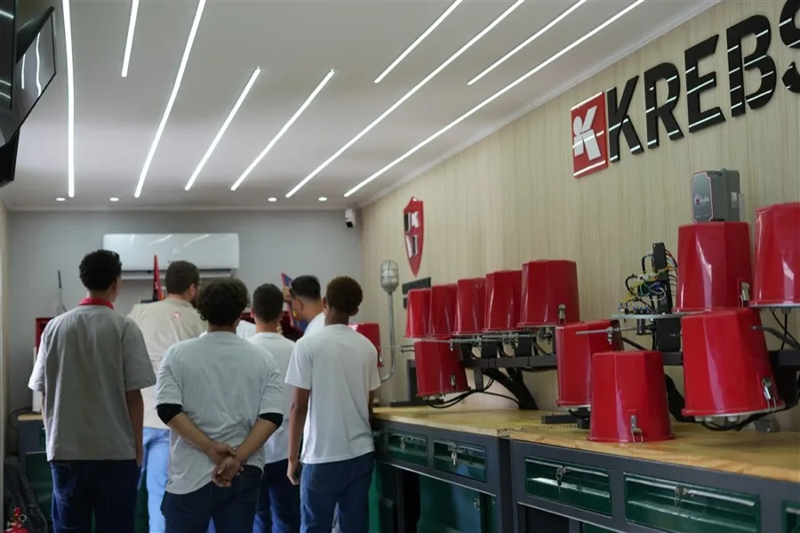
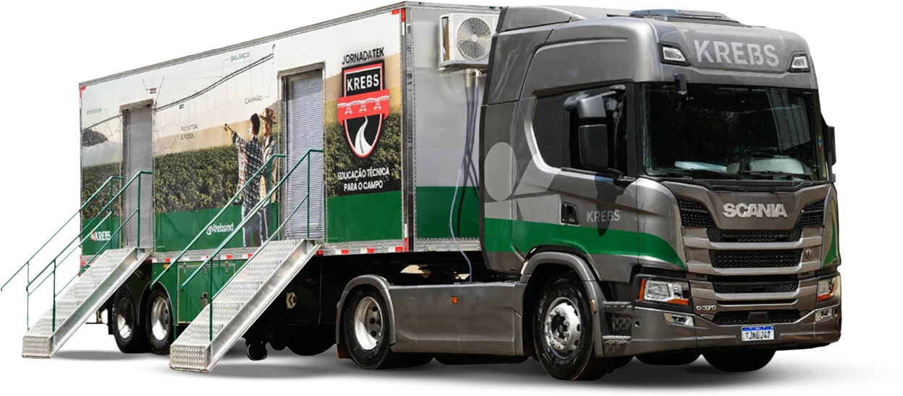
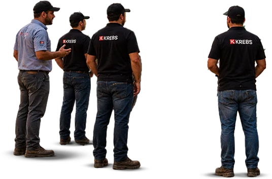
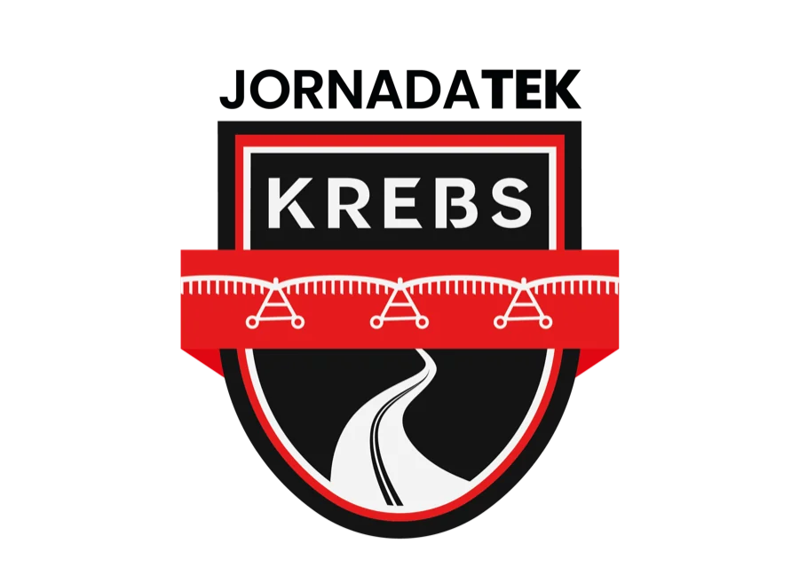
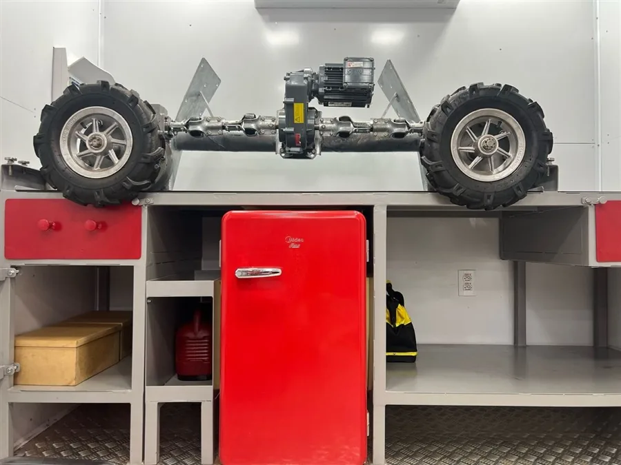
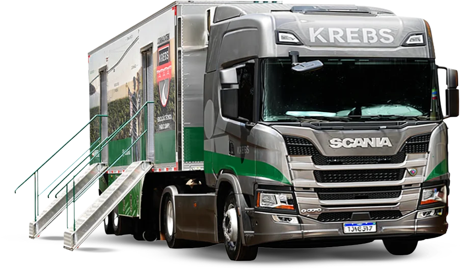

LEVE A EXPERIÊNCIA
JORNADATEKPARA A SUA
PROPRIEDADE.
O Caminhão Escola da KREBS leva até a sua propriedade tecnologia, conhecimento e soluções em irrigação para o seu campo.
Solicitar oJornadaTEK



O que é o
JornadaTEK?
É o programa itinerante da KREBS que leva até a sua propriedade uma experiência completa de conhecimento sobre irrigação, manejo e produtividade no campo.
Capacitação

Tecnologia e
soluções KREBS
Voltado para a
realidade da sua
fazenda
+150
produtores
impactados
+100
Cidades
alcançadas
+120
Fazendas
visitadas
+400
Capacitações
realizadas
Veja o JornadaTEK em ação
Assista a uma apresentação rápida do Caminhão Escola, das
demonstrações realizadas e da experiência completa que levamos
até a sua fazenda.
Como faço
para solicitá-lo?
É simples, rápido e a KREBS leva toda a estrutura do programa até a sua propriedade.
1. Preencha
o formulário
Informe seus dados de contato.
2. Nossa equipe
faz o contato
Vamos conversar sobre as necessidades da sua fazenda e agendar uma visita.
3. Levamos a experiência até sua propriedade
O Caminhão Escola da KREBS vai até a sua fazenda com tecnologia, conhecimento e soluções em irrigação.
Solicite o
JornadaTEK
para a sua fazenda.
Preencha o formulário ao lado e inscreva a sua propriedade para receber o caminhão da KREBS.
